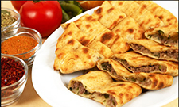
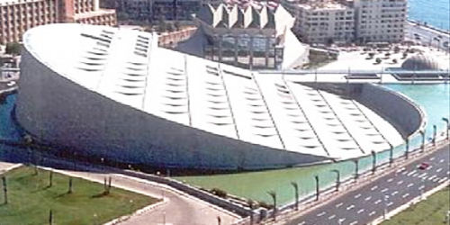

TOURIST ATTRACTION
Lining the banks of the Nile River, Cairo is a fusion of ancient. Churches are built atop Roman ruins and skyscrapers rise behind medieval monuments. Egypt's capital is best known for preserving the last of the Seven Wonders of the Ancient World, but the city contains infinite treasures beyond the Pyramids of Giza.
Click the play button on the following video of top ten tourist attraction
The Egyptian Culture
Egypt is cosmopolitan as it is the perfect fusion of so many cultures. The culture and tradition of Egypt is like a melting pot where multiple cultures and traditions have created a wonderful picture and a mentality that embraces new and advanced ideas for creating a liberal ambiance around. This liberal attitude is being displayed in Egyptians friendly behavior toward foreigners and tourists. If asked, people of Egypt will always share their service and enthusiasm with the people whom hardly they know. In Egypt, besides its marvelous attractions and cultural ambiance, the smiling faces of the Egyptians are an added charm. All these sweet fragments are the best part of the visit to Egypt, which will remain with you as a memory forever. Commonly, Egyptians are quite adjustable in nature and they love to help people. If you ask them any question, they will answer it happily. One most interesting thing is whenever you will ask something to an Egyptian, he will call some other people to discuss about the question and will try the best to offer you the correct answer of the question asked.
Calendar
Both business and religious community in Egypt runs on Western/Georgian calendar but other calendars are widely honored in this country. The Islamic calendar is based on viewing religious formalities and it is based on a lunar cycle of 12 months of 29 or 30 days. The Muslim year is thus almost 11 days smaller than the Georgian year. The Coptic calendar is called Alexandrian calendar, and it is made on a solar cycle and made of 12 months of 30 days and 1 month of 5 days, respectively. In every 4 years a 6th day is added to the shorter month. Besides Coptic Orthodox Church, farmers often follow Coptic calendar for their date reminder, calculation, as well as counting of days.
Egyptian folk music instruments
The ancient Egyptians were known for their love of music and their appeal at every level private and public life, used in the breeding of the optimum, and in celebrations, feasts, services of the temple, the farewell of the dead, and so on The inscriptions of the battles of victory from the pictures of the soldiers of the musicians playing drums They blow into horns. The Egyptians were not satisfied with what was accompanied by concerts and official holidays of music, They created opportunities for banqueting, which friends are invited for food and drink to hear and sing. Many also liked playing instruments and singing. Archaeological research in Egypt and other countries of the East in the last hundred and fifty years has provided us with many valuable documents on the importance of the progress of the East in its civilization and the influence of Egypt on other civilizations, including Greece. The popular musical instruments are: string instruments: Harp, Sesame, Oud, Kanon, Al Rababah and other string instruments. As well as aerodynamic instruments, rhythmic instruments, including the Drum, the Darbuka, and other rhythmic instruments.
Egyptian Clothes
Egypt is characterized by the diversity of environments and cultures that produced a wonderful mix of Egyptian clothes, and the most prominent feature . The Egyptian heritage is the original of the robes. It is a diverse and varied design with its various cotton materials . Of the multiple heritage on the land of Egypt between Nubian, Rural and Bedouin.
Pharaonic fashion
The climate in Egypt has forced people, since prehistoric times, to wear light pore light clothing made from flax yarn which was the most available while wool and cotton were used in later eras .
Bedouin fashion
Sinai and Siwa Oasis in Egypt with its own uniforms and many jewelery and the headgear, which is characterized by a rich embroidery beautiful colors vary. They also feature belts, brocade and masks the face is full of silver, gold and silver.
Nubian fashion

The Nubian costume has a special appeal, its vocabulary and its forms reflect a lot of the features of the Pharaonic civilization, a special costume similar to the nature of the people of Nubia, and their villages in the far south on the banks of the Nile, with palm trees on each side. The uniform of men in Nubian society is united on most occasions except weddings. For women, diversity is characterized by age and social status , we find before marriage wearing robes embroidered in light colors and after marriage, worn with rich feathers and bright colors Red, which is not allowed to wear before marriage.
Egyptian Food
The Egyptian cuisine is characterized by its simple, traditional and far-flavored cuisine, but this is not a problem with the taste that the connoisseur loves for Egyptian food, and it is also known about Egyptian cuisine as heavy and depends heavily on rice and other types of starches. And one of the most famous Egyptian cuisine Koshari, Malukhya, The musacaa., Alexandrian liver, The stuffed pigeon, Beans, The tortillas with meat, Hawawshi. Frying pan and Macaroni with bacon.
Modern Egypt
You will discover in Egypt today the clear contrast between the various historical stages that extend from ancient Egypt to the Roman Empire, and the Islamic era until the modern history of Egypt. In Cairo, as in most of Egypt's major cities, you will find skyscrapers, highways, international hotels, restaurants, large advertising and western clothing, along with local and national clothing, ancient monuments, historic mosques, Coptic churches and traditional markets. In a unique mosaic painting - modern Egypt
Egypt has developed over the past decades to become the modern heart of Africa. It has many modern airports, ports and marinas. The major Egyptian cities are connected to a network of modern highways. In addition, telecommunications networks are experiencing Wireless and Internet services are booming in Egypt and provide the infrastructure necessary to sustain the country's development path.
